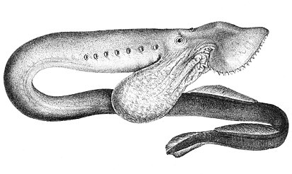

Рассмотрим некоторых представителей этой категории.
Австралийская минога.
Единственный вид бесчелюстных семейства геотриевых (Geotriidae) отряда миногообразных. Длина тела от 45 до 50 см, максимальная длина 62 см. Распространена в Южном Гемпшире в Южном полушарии, на юге Австралии и у Новой Зеландии, Чили и Аргентины. Первые четыре года живут как пескоройки. Во взрослом состоянии живут в открытом море, где питаются как паразиты рыб. На нерест заходят в реки, где проводят до 18 месяцев созревания перед нерестом. Погибают после нереста.
